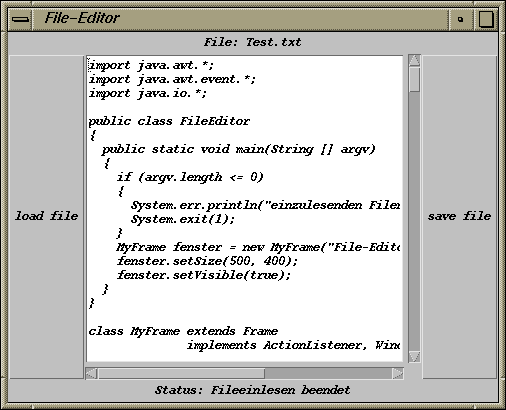

Das Übungsblatt besteht aus der Aufgabe 27 und der Teamaufgabe 28 mit jeweils 4 Punkten.
Schreiben Sie eine Applikation, die ein File einlesen und das eventuell abgeänderte File wieder abspeichern kann. Vom Layout her soll es in etwa wie das folgende Bild
aussehen.
Oben soll der Filename erscheinen (der mit dem Aufruf des Java-Interpreters "java FileEditor Test.txt" mit übergeben wurde), unten der momentane Status der Operation (File öffnen, Einlesen beendet, ...). Links und rechts soll sich jeweils ein Button befinden, der die Aktion "Laden" bzw. "Speichern" auslösen soll. In der Mitte soll der File-Inhalt angezeigt werden (und sich verändern lassen). Nennen Sie die GUI-Komponente für den Status status.
Da es sich um eine Java-Applikation handelt, müssten Sie zunächst ein Frame-Objekt erzeugen, das als Container dient. Da dieses Objekt aber von einer Klasse stammen muss, die das Interface ActionListener implementiert, muss die Klasse Frame abgeleitet werden und die abgeleitete Klasse (z.B. MyFrame) das Interface ActionListener implementieren. Daher sollte man in der Java-Applikation gleich ein Objekt der Klasse MyFrame anlegen. Dieses Objekt kann dann als Datenelemente alle benötigten GUI-Komponenten beinhalten und vergleichbar zu einem Applet-Objekt agieren.
Verwenden Sie die Klasse TextArea zur Anzeige des File-Inhalts, deren Objekte mehrzeiligen Text anzeigen können und automatisch bei Bedarf mit Scrollbars ausgestattet werden. Sie erlauben automatisch auch, Zeilen und Zeichen zu ändern. Nennen Sie das Objekt dieser Klasse inhalt.
Verwenden
Sie die drei Routinen oeffne_file_lesen(),
oeffne_file_schreiben() und update() aus dem
File "FileEditor.java" zum
Einlesen eines Files, Schreiben eines Files bzw. zum Update
einer GUI-Komponente. Die ersten beiden Routinen vertrauen
darauf, dass Sie die GUI-Komponenten inhalt bzw.
status nennen (wie oben geschildert). Die beiden
File-Routinen müssen von Ihnen noch an allen Stellen
mit "..." ergänzt werden, da an diesen Stellen
die beiden GUI-Komponenten inhalt und status
verwendet werden.
Definieren Sie außerdem ein String-Objekt namens newline,
das Sie mit dem Wert System.getProperty("line.separator")
vorbesetzen.
Abzugeben ist der Java-Sourcecode und der zugehörige Bytecode der Java-Applikation.
Programmieren Sie einen Währungsrechner, der DM-Beträge in
Euro, italienische Lire, österreichische Schillinge oder
französische Francs umrechnen kann (ohne eine besondere Rundung
vorzunehmen). Das Java-Applet soll in etwa wie das unten stehende Applet
funktionieren:
Finden Sie unter den Layout-Managern FlowLayout, BorderLayout und GridLayout den zum Applet passenden Layout-Manager. Fügen Sie mit diesem die nötigen GUI-Komponenten zum Applet hinzu.
Verwenden Sie für die Auswahlliste bei den Währungen die Klasse List, bei der man durch die Methode add() die Auswahlbezeichnungen als Strings hinzufügt. Welche anderen GUI-Komponenten brauchen Sie?
Registrieren Sie für die GUI-Komponente zum Ausrechnen einen passenden Listener und wählen Sie für die GUI-Komponente zur Betragseingabe denselben Listener. Durch welches Windows-Ereignis (mit Maus oder Tastatur) bei der Betragseingabe wird dieser ausgelöst?
Welchen Listener müssen Sie für die Auswahlliste
registrieren?
Wie erfahren Sie vom zugehörigen Event-Objekt, ob eine
Auswahl selektiert oder deselektiert wurde und welche
Auswahl selektiert wurde?
Um den Inhalt der GUI-Komponente zum Anzeigen des umgerechneten Betrags im Applet zu ändern, müssen Sie die Methode invalidate() für diese Komponente aufrufen (Zustand/Anzeige der GUI-Komponente wird als veraltet markiert) und anschließend die Methode validate() für das Applet (Applet soll alle in ihm enthaltenen GUI-Komponenten auf den aktuellen Stand bringen). Vgl. die Methode update() in der Vorgabe von Aufgabe 27.
Abzugeben ist der Java-Sourcecode und der zugehörige Bytecode des Applets und das HTML-File.